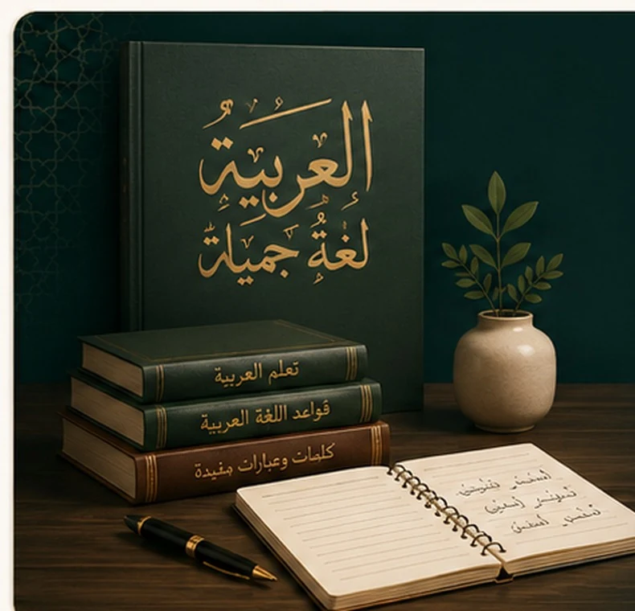

Parcours Coran
Je souhaite apprendre le Coran
Lecture depuis zéro, fluidité, prononciation, tajwid, mémorisation, révision et compréhension progressive.
- Débutants acceptés
- Correction individuelle
- Progression structurée
Cours individuels en ligne — Coran et langue arabe
Que vous commenciez de zéro ou que vous souhaitiez perfectionner vos connaissances, bénéficiez d’un accompagnement individuel, d’explications simples en français et d’un programme construit selon votre objectif.
Deux parcours, un seul site
Choisissez le parcours qui correspond à ce que vous souhaitez apprendre. Chaque programme est individuel et adapté à votre niveau.
Parcours Coran
Lecture depuis zéro, fluidité, prononciation, tajwid, mémorisation, révision et compréhension progressive.
Parcours Langue arabe
Lecture, écriture, vocabulaire, compréhension, conversation, grammaire, conjugaison et arabe coranique.
Vous vous reconnaissez ?
Le problème n’est pas nécessairement votre capacité à apprendre. Il vous manque peut-être un parcours clair, une correction régulière et un accompagnement adapté.
Vous utilisez plusieurs ressources sans savoir ce que vous devez apprendre en premier.
Les erreurs de lecture, de prononciation ou de grammaire restent parfois sans explication.
Un contenu trop facile ralentit, tandis qu’un contenu trop difficile décourage.
Regarder des cours ne suffit pas : il faut lire, réciter, parler, écrire et être corrigé.
Une progression guidée
Niveau, difficultés, objectif et disponibilité.
Un parcours personnalisé et réaliste.
Des notions claires avec des exemples.
Lecture, récitation, parole et écriture.
Une explication précise de chaque erreur.
Des acquis consolidés régulièrement.
Une progression durable avec confiance.
Parcours Coran
Commencez depuis votre niveau actuel et progressez avec un accompagnement clair, patient et structuré.
Reconnaître les lettres, lire les mots et progresser vers une lecture autonome.
En savoir plusCorriger la prononciation et appliquer progressivement les règles de récitation.
En savoir plusMémoriser, réviser et consolider les sourates avec une méthode organisée.
En savoir plusDévelopper les bases linguistiques nécessaires pour mieux comprendre les versets.
En savoir plus
Programme de langue arabe
Que vous commenciez de zéro ou que vous possédiez déjà quelques bases, progressez grâce à des cours individuels, des explications claires en français et un parcours adapté à votre objectif.
Votre accompagnement
Toute la séance est consacrée à votre niveau et à vos questions.
Nous identifions votre niveau, vos difficultés et votre objectif.
Le contenu, le rythme et les exercices sont adaptés à vos besoins.
Fiches, textes, audio, exercices et ressources selon le parcours.
Chaque erreur importante est expliquée avec patience.
Vous savez ce qui est acquis et quelle sera la prochaine étape.
Votre professeur
Je m’appelle Ismail Goni. Depuis plus de huit ans, j’accompagne des élèves dans l’apprentissage de la lecture du Coran, du tajwid, de la mémorisation et de la langue arabe.
Ma priorité est de comprendre votre niveau réel, de vous expliquer simplement les notions difficiles et de vous aider à progresser sans vous sentir jugé.
Avis des élèves
5,0/5 sur Preply · 15 avis d’élèves
« J’apprécie vraiment nos cours de langue. Tu expliques très bien, c’est toujours vivant et pas du tout ennuyeux. Je sens que je m’améliore de semaine en semaine. »
« Grâce à tes explications simples, j’ai enfin compris comment prononcer les lettres difficiles. Je me sens beaucoup plus à l’aise lorsque je lis le Coran. »
« J’ai réussi à retenir toute la sourate par cœur sans aucune hésitation. Ta méthode de mémorisation est magique, merci infiniment ! »
Questions fréquentes
Oui. Le programme commence à votre niveau actuel, même si vous ne connaissez pas encore les lettres arabes.
Oui. Chaque séance est adaptée à votre niveau, à vos difficultés et à votre objectif.
Le parcours Coran se concentre sur la lecture, le tajwid, la mémorisation et la compréhension progressive. Le parcours arabe développe la lecture, l’écriture, la conversation, la grammaire et la compréhension.
Les cours ont lieu sur Google Meet et suivent généralement cette progression : révision, nouvelle notion, pratique, correction et devoir personnalisé.
Oui. L’échange de 50 minutes permet d’évaluer votre niveau et de vous recommander un parcours, sans obligation d’inscription.
Après le diagnostic, vous recevez une proposition claire correspondant au parcours et au rythme recommandés. Les modalités sont aussi disponibles sur WhatsApp avant toute inscription.
Votre prochaine étape
Choisissez votre objectif principal ou réservez un diagnostic gratuit de 50 minutes pour recevoir une recommandation adaptée.